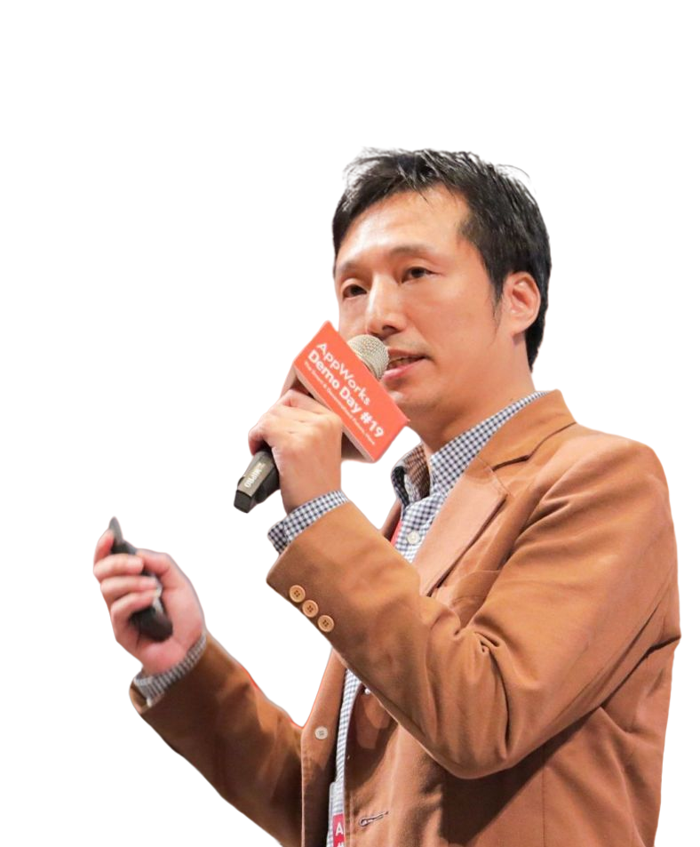

SELECTED  // FEATURED_SPEAKER 張凱榮 AppWorks 創業合夥人 · Local AI 玩家 · 自架 Server 玩家 PROJECT把 SDK 變成人人看得懂的 AI 工作流 AI Agent 讀程式、拆流程、做驗證 · 讓工程師的 SDK 轉成企業管得住的 n8n workflow · 現場跑一次完整流程。 ↗ GitHub↗ 作品
SELECTED // FEATURED_SPEAKER 林京賢 LEO 某科技公司資深 ML 工程師 · 製造業 AI 導入顧問 · AI Agent 系統架構師 · 10 年 Python 經驗 · 熟悉 llama.cpp / vLLM / Ollama / LangChain / vector DB PROJECT自架 Llama 3.1 + RAG 財報問答系統 現場跑一個 RAG query 給大家看 · 展示延遲與回答品質 · 以及用 Mac Mini 架設整套 Server 的過程。 ↗ 技術文章
SELECTED // FEATURED_SPEAKER Robin 獨立開發者 PROJECTComfyUI 批量生圖自動化 用 ComfyUI + Python workflow · 批量產出 100 張商品圖 · Local GPU 完成 · 全程不上雲。 ↗ Demo 影片
SELECTED // FEATURED_SPEAKER Alice Chen AI 新創 CTO · 曾經在 Google Research 工作 PROJECT端到端 agent framework 分享從 0 到 1 建一個 production-ready 的 AI agent 系統 · 踩過的坑跟解法。
SELECTED // FEATURED_SPEAKER 老王 退休工程師 · Server 自架 15 年 PROJECT家用 NAS 加上 Local LLM 用舊 PC + 二手顯卡 · 架一個全家可用的 Local AI 助理 · 費用壓在 2 萬以內。
SELECTED // FEATURED_SPEAKER 張凱榮 AppWorks 創業合夥人 · Local AI 玩家 · 自架 Server 玩家 PROJECT把 SDK 變成人人看得懂的 AI 工作流 AI Agent 讀程式、拆流程、做驗證 · 讓工程師的 SDK 轉成企業管得住的 n8n workflow · 現場跑一次完整流程。 ↗ GitHub↗ 作品
SELECTED // FEATURED_SPEAKER 林京賢 LEO 某科技公司資深 ML 工程師 · 製造業 AI 導入顧問 · AI Agent 系統架構師 · 10 年 Python 經驗 · 熟悉 llama.cpp / vLLM / Ollama / LangChain / vector DB PROJECT自架 Llama 3.1 + RAG 財報問答系統 現場跑一個 RAG query 給大家看 · 展示延遲與回答品質 · 以及用 Mac Mini 架設整套 Server 的過程。 ↗ 技術文章
SELECTED // FEATURED_SPEAKER Robin 獨立開發者 PROJECTComfyUI 批量生圖自動化 用 ComfyUI + Python workflow · 批量產出 100 張商品圖 · Local GPU 完成 · 全程不上雲。 ↗ Demo 影片
SELECTED // FEATURED_SPEAKER Alice Chen AI 新創 CTO · 曾經在 Google Research 工作 PROJECT端到端 agent framework 分享從 0 到 1 建一個 production-ready 的 AI agent 系統 · 踩過的坑跟解法。
SELECTED // FEATURED_SPEAKER 老王 退休工程師 · Server 自架 15 年 PROJECT家用 NAS 加上 Local LLM 用舊 PC + 二手顯卡 · 架一個全家可用的 Local AI 助理 · 費用壓在 2 萬以內。